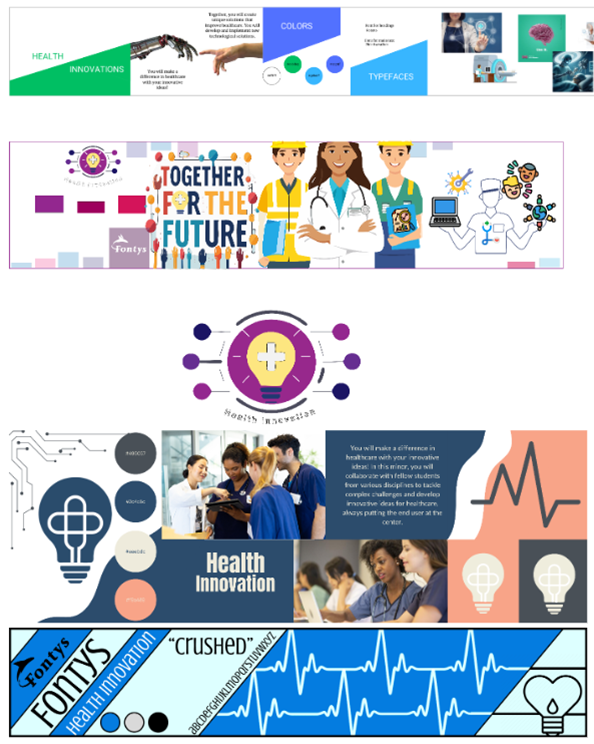
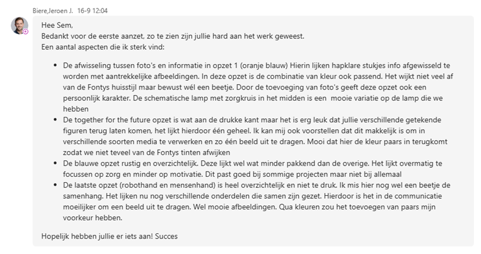
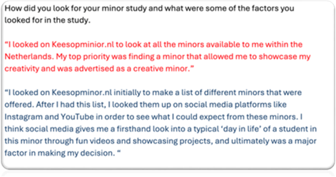
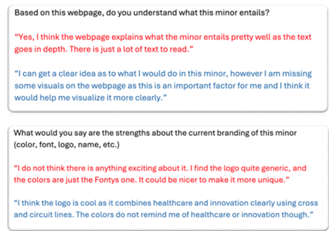
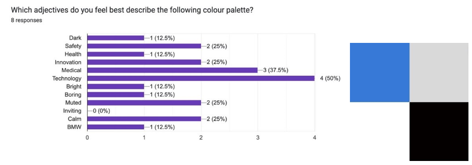
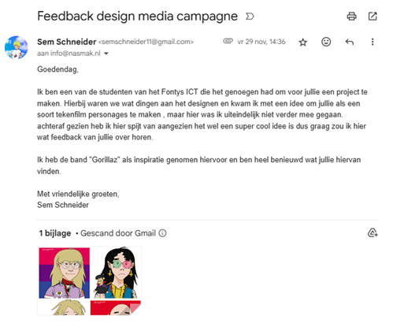
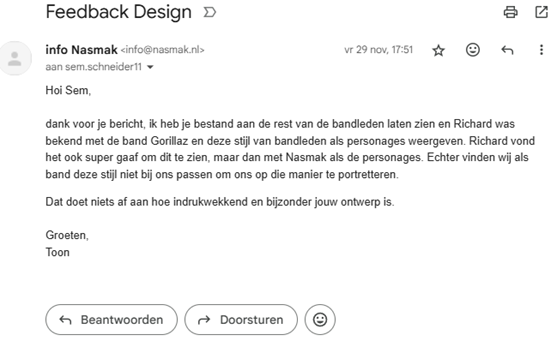
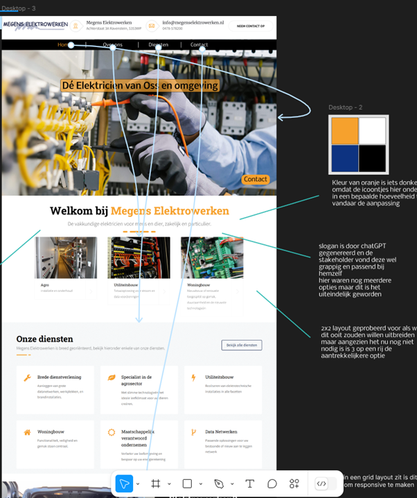

Interactive media products
You orient in the relevant tech, media and design landscape and create interactive media products that you have tested with users and stakeholders.
Inhoudsopgave
Stylescape testing with stakeholder
Stylescape Health Innovation
Als groep hebben we allemaal een stylescape gemaakt over fontys health innovation, die we daarna met elkaar kunnen vergelijken en feedback kunnen vragen over welke het beste bij de minor past. Dit hebben we direct bij de stakeholder van het project gedaan. Ons doel hiervan was om meer duidelijkheid te krijgen over wat de stakeholder zelf voelt over de minor zodat wij daarop kunnen inspelen.
Jeroen (onze stakeholder) was hier heel duidelijk bij en gaf een uitgebreide uitleg over wat hij wel of niet passend vindt bij de minor Health Innovation. Door deze feedback hadden we ook keuzes kunnen maken over kleurenpalleten, en iconen die we willen toevoegen aan het onze designs.
Interview
Interview met student en afgestudeerde
Om verder informatie te krijgen over wat de student voelt bij de minor Health Innovation, en hoe de studenten op hun minor zijn gekomen hebben we interview vragen gesteld die ons verder zouden helpen met deze opdracht. Het doel was vooral om erachter te komen wat hoe studenten een minor kiezen, en wat ze van de huidige stijl van de minor Health Innovation vinden.
We hadden vervolgens 2 personen uit onze doelgroep geïnterviewd; 1 daarvan was een student uit de ict-sector, en de andere was uit de zorg sector. Hierdoor raakten we beide vlakken waar de minor over gaat.
Met deze informatie konden we ook verder met de content strategie omdat we nu meer duidelijkheid hadden over hoe studenten bij een minor terechtkomen. Hier kregen we later nog feedback over dat het goed is dat we personen uit verschillende sectoren hebben geïnterviewd, maar dat 2 niet echt genoeg is voor een duidelijk resultaat. Hierdoor wordt het onderzoek minder betrouwbaar dus dat is een verbeterpunt voor de volgende keer.
Enquête
Kleurenpaletten enquête
We hadden uit de feedback van Jeroen over de stylescapes een aantal kleurenpaletten gekozen die we verder gingen onderzoeken. Hierbij maakten we gebruik van een google forms, deze kun je als een enquête doorsturen of laten invullen door andere studenten waardoor je meer antwoorden krijgt. Hierdoor wordt het onderzoek dan weer meer betrouwbaar.
Dit is een voorbeeld van een van de kleurenpaletten, zie dit pdf bestand voor alle kleurenpaletten en resultaten.
Uit deze gegevens hebben we 2 nieuwe kleurenpaletten gemaakt die we eigenlijk voor de rest van het project hebben gebruikt. Deze waren eigenlijk allebei heel goed en bruikbaar volgens Jeroen, dus hadden we gewoon met beide deze kleurenpaletten verdere Visuals gemaakt.
Op deze keuze hadden we ook feedback gekregen die achteraf gezien heel belangrijk was. We kregen als feedback te horen dat we als branding eigenlijk geen 2 opties voor kleurenpaletten kunnen houden en dat we dan zelf een definitieve keuze moeten maken. We hadden voor de rest van het project die 2 kleurenpaletten in gedachte gehouden maar dit hadden we eigenlijk maar met 1 moeten doen.
Interview
Interview NasmakPM
Mila, Yurick en Ik zijn naar de repetitive gegaan van Nasmak om een beter inzicht te krijgen van hoe de band is als ze samen zijn, en dan kunnen we ze gelijk wat vragen stellen om meer informatie te krijgen over de band.
Questions: 1. How would you describe the sound and style of the band Nasmak?
“Nasmak would be described as “No wave” instead of the more known “New wave”. It rejects the normal aspects of both punk rock and new wave, opting instead for chaotic, and experimental sounds.
2. With Richard being a new member of the band, what does he bring to the table that makes him fitted for Nasmak?
“Richard brings a darker side to the band, he also brings the visuals to the main performance” (things he named that could be used for visuals would be loading bars, startup logo)
3. What is the hardest part about having a band that breaks the norm for music?
“Improvising is hard by itself but improvising something and getting the others to follow along with the improv on the spot is even harder. To be honest we just start doing something, we have nothing planned. We try things while we play, once they have a beat going the lead singer starts implementing lyrics, those have already been written beforehand.”
Media Campaign feedback
Gorillaz Feedback
Ik ben teruggekomen op een design wat ik had gemaakt in het project media campagne om hier feedback op te vragen. Hier was ik destijds niet verder op ingegaan omdat ik zelf eigenlijk besloot dat dit niks zou worden. Achteraf gezien vind ik en ook anderen het een vet idee dus heb ik nog een mailtje gestuurd om feedback te vragen.
Hier is de mail die ik had gestuurd
Hier krijg ik de bevestiging dat het idee in ieder geval wel vet is, maar past het helaas niet bij Nasmak dus zal ik hier niet verder op in gaan. Ik heb bij deze wel geleerd om altijd feedback te vragen ookal heb ik zelf het gevoel dat het niks wordt.
Gebruikerstest Plan: Ticket Bestellen en Easter Egg Vinden
Doelstellingen
- -Testen hoe gebruiksvriendelijk het proces van het bestellen van tickets is.
- -Testen of gebruikers eventuele fouten tegenkomen bij het invullen van gegevens en het verzenden van het formulier.
- -Testen of de Easter eggs gevonden kunnen worden en hoe deze ervaren worden.
Testscenario's
Scenario 1: Ticket bestellen
De deelnemer probeert het volgende uit te voeren:
- -Navigeert vanuit de homepagina naar de ticketpagina.
- -Selecteert een datum en het aantal tickets.
- -Gaat verder naar de informatiepagina.
- -Voert persoonlijke gegevens in.
- -Verzendt het formulier.
Scenario 2: Easter egg vinden
De deelnemer wordt gevraagd "vrij rond te kijken op de website en eventuele easter eggs te ontdekken."
Ticket Bestellen
-
Stap 1: Ga naar de ticketpagina.
Vraag: "Hoe ervaar je de lay-out en navigatie?"
-
Stap 2: Selecteer het aantal tickets voor een specifieke datum.
Vraag: "Was het duidelijk hoe je het aantal tickets moest aanpassen?"
-
Stap 3: Vul de persoonlijke gegevens in en verzend het formulier.
- Vraag: "Had je moeite met het invullen van de velden?"
- Vraag: "Ontving je een bevestiging? (visueel)"
Easter Egg
-
Stap 1: Verken de website vrijelijk.
Vraag: "Heb je iets onverwachts gevonden? Wat was je ervaring hiermee?"
Ervaren problemen
Hierboven staat het plan van hoe ik de gebruikerservaring wil testen van onze site als je tickets wilt bestellen voor de dense night. Ik heb hiervoor mijn vader, broer en vriendin gevraagd om verschillende taken uit te voeren.
Uitwerking 1: Testresultaten van mijn vader (56)
Scenario 1: Ticket bestellen
-
Stap 1: Ga naar de ticketpagina
Ervaring: "Het menu bovenaan was duidelijk, maar ik de knop van tickets kopen mag wel groter en duidelijker”.
Opmerking: Hij verwachtte een opvallendere knop voor "Tickets" op de homepage. Hij had gehoopt dat dit beter te zien is aangezien dat het belangrijkste is van deze pagina.
-
Stap 2: Selecteer het aantal tickets
Ervaring: "Het werkte goed, ik zag meteen hoe ik het aantal moest aanpassen naar het gewenste getal."
-
Stap 3: Vul de persoonlijke gegevens in en verzend het formulier
Ervaring: "Het invullen was simpel. De velden waren logisch en ik kreeg meteen een bevestiging."
Opmerking: Hij waardeerde de visuele bevestiging, maar vroeg zich af waarom er geen overzicht was van het aantal tickets op de laatste pagina.
Scenario 2: Easter egg vinden
- Resultaat: Hij heeft de easter egg van de timeline niet gevonden, de snake easter egg wel.
- Opmerking: "Ik wist niet waar ik moest zoeken. Misschien een kleine hint toevoegen of laten zien dat het klikbaar is?"
Conclusie
- -Navigatieknop naar tickets kopen mag groter en duidelijker.
- -Het aantal tickets moet zichtbaar blijven op de informatiepagina.
er zijn nog 2 van deze zelfde testen te vinden zie dit pdf bestand .
Project X interactive webdesign
Als sprint X heb ik een volledig interactieve webdesign gemaakt zoals de stakeholder deze wilde hebben.
Figma link: https://www.figma.com/design/qMYpcoZucGFCGkK2j2IGjc
User experience test project X website
Gebruikerstest: Website Design Feedback
Testpersoon:
Okan, een frequente internetgebruiker, die ook ICT Media studeert.
Doel van de test:
Testen van de gebruiksvriendelijkheid van de website, specifiek gericht op het navigeren door de website.
Beschrijving van de Test
1. Testomgeving:
De test werd uitgevoerd in de klas op mijn laptop met het Figma design waar klikbare interacties in zitten.
2. Taken:
- Gebruik de fixed contact-knop rechtsonder om naar het contactgedeelte van de website te scrollen.
- Gebruik de navigatiebalk bovenaan om naar de volgende secties te navigeren:
- Home
- Over ons
- Diensten
- Contact
Fixed Contact-knop
Positief:
- De knop is altijd zichtbaar, wat handig is wanneer de gebruiker zich in het midden van de pagina bevindt.
- Bij het klikken op de knop scrollt de pagina soepel naar het contactgedeelte onderaan.
- Okan gaf aan dat het een "fijne shortcut" is die duidelijk aangeeft waarvoor het bedoeld is.
Verbeterpunten:
- Andrejs stelde voor om het design misschien wat mooier te maken, hij vond deze erg standaard.
Navigatiebalk
Positief:
- Het scrollen bij het klikken op een navigatie-item is soepel.
- De volgorde (Home, Over ons, Diensten, Contact) werd als prettig ervaren aangezien dit ook zo in de website zelf is.
Verbeterpunten:
- Okan stelde voor dat de navigatiebalk “sticky” moest blijven bovenaan de pagina, zodat deze altijd klikbaar is, ongeacht hoe ver je naar beneden bent gescrold.
Feedback van Okan
1. Algemene indruk:
"Het ziet er professioneel en overzichtelijk uit. Alles werkt zoals ik verwacht en voelt logisch aan."
2. Pluspunten:
- De vaste contact-knop is handig en spaart tijd.
- De soepel scrollende navigatiebalk voelt prettig.
- De website ziet er visueel aantrekkelijk en gebruiksvriendelijk uit.
3. Verbeteringen:
- De contact-knop mag mooier worden.
- De navigatiebalk mag “sticky” worden zodat gebruikers niet telkens omhoog hoeven te scrollen.
Conclusie en Aanpassingen
Op basis van de feedback van Okan zal ik de volgende wijzigingen doorvoeren:
1. Fixed contact-knop:
De knop er beter uit laten zien.
2. Navigatiebalk:
Een sticky navigatiebalk implementeren, zodat deze altijd zichtbaar blijft bij het scrollen.
Met deze verbeteringen verwacht ik een meer intuïtieve en gebruiksvriendelijke ervaring te bieden voor mijn gebruikers.
Dit heb ik nog niet gedaan in deze versie, bij de eindpresentatie wel.